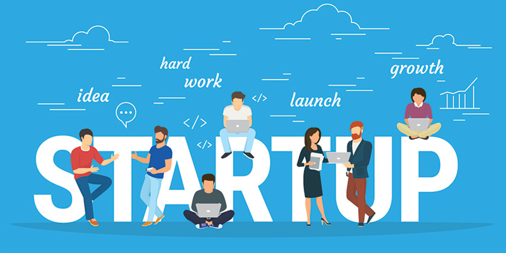

Who we are?
The Innovation and Entrepreneurship Development Centre (IEDC) is an initiative of National Science and Technology Entrepreneurship Development Board (NSTEDB), Department of Science and Technology (DST), New Delhi. The aim was to develop an institutional mechanism to create entrepreneurial culture in academic institutions to foster growth of innovation and entrepreneurship amongst the faculty and students. Every year this centre provides financial support to a good number of students for developing innovative products. Up to one lakh rupees is made available for each idea. Apart from this financial support we are providing mentoring and Infrastructural support for these projects. Also this centre arranges many classes and camps to promote technology based innovation and entrepreneurship among the students.

Our inspiration behind the starting of IEDC is that many of our students have shown consistent interest to get more knowledge about entrepreneurship to be competent in the modern world. A good many of our students and teachers have successfully used their talents to develop innovative products and won several national level project contests and got funds for product development from various research and development institutes around the country. There are no other centers in our district or neighboring districts for guidance in the field of entrepreneurship. The scope of rural technology development is very high because our college is located in a rural setting with most people depending on traditional farming methods. Our management and empowered faculty members are trying to provide technology based solutions to the problems faced by the agrarian rural community and these efforts have been streamlined through IEDC.